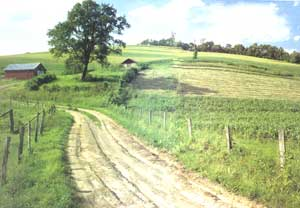
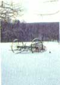
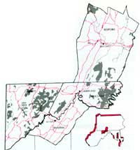
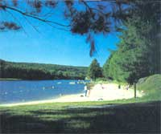
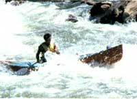
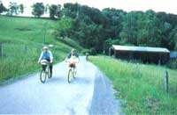
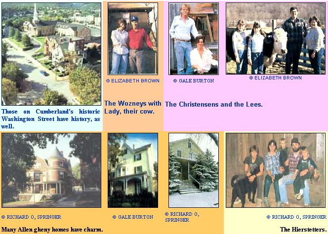

The Southern Alleghenies
CREAM OF THE COUNTRY
By Elizabeth Brown
May/June 1988
A rich and rewarding region of " New America."
The valleys lying between the wooded mountains of the southern Alleghenies were once considered to be the Gateway to the West. Millions of years of erosion left natural corridors in the Allegheny Plateau that allowed earlier-day emigrants to leave the comparative civilization of the east coast for the unsettled, unpopulated land to the west. Today, because of alternate east-west routes and the airplane, this part of western Appalachia retains the remoteness, beauty and quiet so important to lovers of rural life. Its mountains, which divide the rivers emptying into the Atlantic from those draining into the Gulf of Mexico, are rich with springs, natural watersheds, lakes, creeks and the fertile meadows these water systems produce.
Four counties-Allegany (Maryland), Garrett (Maryland), Bedford (Pennsylvania) and Mineral (West Virginia)-though in three different states, form a natural grouping that is both rural and nearly equidistant (some two and a half hours) from three major cities. Their main employment and retail center is Allegany's county seat, Cumberland (pop. 25,233). This official Gateway to the West, intersected by U.S. Highways 220 and 40, is located 130 miles southeast of Pittsburgh, 140 miles west of Baltimore and 140 miles northwest of Washington, D.C.
Much of this four-county area is preserved in national or state game lands. Garrett County alone has over 74,000 acres of state forests, and manmade Deep Creek Lake spreads tentacle-like through the center of the county, providing miles of shoreline for private homes as well as for a state park. Allegany County contains Dan's Mountain and Green Ridge state parks; Rocky Gap, another manmade lake, reflects the surrounding mountains in its clear waters. Bedford County, to the northeast, has Lake Shawnee State Park, and numerous creeks and rivers in all four counties are excellent for swimming and fishing.
Allegany, the most densely populated of the four counties, has suffered economically over these last years. Strong unions and shrinking railroad and coal businesses have caused some of the area's largest manufacturing firms to slow production or close their doors. Small industries, however, are moving into the area, and agriculture (primarily beef cow-calf enterprises and fruit production) still plays a significant role in the economy. Frostburg State University, seven miles north of Cumberland, provides over 500 jobs, and its current enrollment of 4,186 is expected to increase steadily.
Tourism and agriculture form the backbone of the region's economy.
Garrett County's business center and county seat is Oakland (pop. 1,909), a town renowned for its expansive Victorian homes, built when fortunes were made from coal. With its higher elevation (900 to 3,300 feet above sea level), Garrett is Maryland's mountaintop playground. One-fifth of the county is made up of lakes and publicly owned park-lands. Tourism is the backbone of its economy, with the continuing importance of agriculture evidenced by the area's many scenic farms.
Bedford County, in neighboring Pennsylvania, has a county seat, Bedford Borough (pop. 3,205), that's rich in history and also enjoys a healthy tourist trade. Bedford Springs Hotel, famous for its mineral springs, is a major employer, and the 72-acre Old Bedford Village re-creates a world of pioneer America, where local craftspeople display techniques and skills dating back to the 1790s. Those people located south of Bedford often commute to Cumberland for employment, while those north travel to Altoona, Pennsylvania.
West Virginia's Mineral County is the smallest of the four, yet it has over 75,000 acres in farmland, and family-owned farms are common. In Keyser (pop. 6,564), the county seat and largest city, a lumber mill, glass container factory and garment industry account for some jobs, but many people, once again, commute to Cumberland to work.
In terms of serious crime (homicide, rape, robbery, aggravated assault, burglary, theft, auto theft and arson), this definitely seems to be a safe neck of the woods. Compared to a national average of 5,222 per 100,000 people, Allegany's average is 2,414; Garrett's, 1,822; Mineral's, 979; and Bedford comes in at a mere 655.
Land and Water
Cumberland's rental property is plentiful and inexpensive. Spacious two- and three-bedroom homes can be found for as little as $200 to $400 a month. Two-bedroom apartments span a range of $150 to $500. Rental property in outlying small towns can also be found for comparable prices, and farms sometimes rent for as little as $50 to $100 a month.
There's also a variety of housing available for purchase, ranging from $15,000 to $200,000, though real estate prices have increased over the past year. In Cumberland, for example, it's possible to find a three-bedroom, 2,000-square-foot brick house for $30,000, but the average price for this area is $48,000.
City lots range from $7,500 to $22,000, while an acre of lake-front property on Deep Creek Lake can cost from $130,000 to $160,000. Wooded mountain land sells for as little as $300 per acre, however, and an acre of fertile, rolling grassland goes for $800 to $1,000. (Then again, a small farmette close to town can run up to $5,000 an acre.) In general, the more land you buy, the lower the price, so 100- to 200-acre farms sometimes sell for $500 an acre.
Deep, rich earth covers large areas of these four counties. Garrett County, for example, is primarily made up of well-drained topsoil, 20 to 40 inches deep. Here, the ground contains small fragments of rock that are abrasive to farm tools but don't hinder cultivation. In Bedford and Mineral counties, the rivers and floods that brought loamy soil also left substantial stony deposits. These rockier areas are good for pasture, though, and if the rocks are removed, the rolling land can be productive.
The Allegheny area has plentiful rainfall, and very little irrigation is carried on by local farmers. Many of the homesteads don't even need wells, thanks to more than adequate springs. Even during droughts, which occur infrequently, the water continues to roll out of mountain sources, and after filtering through carbonate rock and sandstone formations, it generally arrives clean, clear and good for drinking. Wells typically come in at about the 100- to 200-foot range, but- in rare cases-might have to be dug to 500 feet.
In Allegany, Bedford and Mineral counties, killing frosts usually end in April and begin in October. The first snow doesn't fly until Thanksgiving, and hard winter doesn't set in until after Christmas. Though mountain weather patterns vary from year to year, January and February typically include some days below zero, and you can count on the thermometer topping 100° F once or twice during the summer. August and the first pan of September sometimes see high humidity, which can make the days oppressive, but the nights are almost always relatively cool.
Garrett County, with its higher elevation, is about 10 degrees colder than the other counties, and it tends to get a lot more snow.
Really violent weather is rare, but high winds blow in the spring, and impressive summer thunderstorms are relatively common. Minor flooding can be expected, and flash flooding caused by snowmelt or heavy rains sometimes occurs. (In 1984 and 1985, floods caused considerable damage to some small towns and homes along the rivers.)
Allegany County sits on the western edge of a major fruit-growing area, well known for its apples, peaches, cherries and strawberries, with much of the fruit harvested by pick-your-own customers. Grapes are comparatively new to the region, but the hilly, well-drained topography is proving conducive to their production.
Cultural Factors
The famed Mason-Dixon Line forms the Pennsylvania-Maryland border, and the entire region is steeped in history. George Washington's headquarters, for example, stand preserved in Cumberland. Old Bedford Village has over 40 original log homes and craft shops, and Oakland, Bedford and Cumberland have restored many of their old, beautiful downtown buildings.
This area also has a surprisingly rich fund of excellent and varied music. Bedford Springs Festival, held for six weeks in the summer, features internationally acclaimed artists. In Cumberland, the Community Concert Association presents five shows a year. And for those who like some knee-slapping and foot-stomping with their music, there's the annual Blue Grass Festival. In addition to the many local theater groups, Garrett County hosts summer stock, and Frostburg State University can be counted on to present a number of nationally touring entertainers.
Any discussion of the area's culture must include the many annual festivals. The people in this region rejoice at the seasonal nature of their lives, and Winterfest, Autumn Glory, May Day and the Great Pumpkin Festival are only a sampling of the fetes that bring them together to celebrate.
When one thinks of Appalachia, one often envisions mountainous terrain that forces its inhabitants to eke out a living amidst the rocks and gullies. The truth is that the land in this particular part of Appalachia can be rugged. It also can be benevolent, gentle and generous. The same can be said for these independent people. Mostly native-born, white Protestants, they've spent years in a geography and climate that invite an outdoor, un-confined lifestyle. Privacy and time to spend with family and friends are considered basic necessities of life, as is the freedom to roam, hunt and fish.
Area
Allegany 421 sq. mi.
Garrett 657 sq. mi.
Bedford l,017sq. mi.
Mineral 330 sq. mi.
Population
Allegany 77,655
Garret 26,851
Bedford 48,060
Mineral 27,583
Density
Allegany 182.3 per sq. mi.
Garrett 40.5 per sq. mi.
Bedford 47.2 per sq. mi.
Mineral 83.6 per sq. mi.
Economy
Allegany
1. retail trade; 2. service; 3. manufacturing Garrett
1. service; 2. retail trade; 3. manufacturing
Bedford
1. retail trade; 2. manufacturing; 3. agriculture, forestries, fishing, mining
Mineral
1. manufacturing; 2. government; 3. trade
Per Capita Income
(1985)
Allegany $8,771
Garrett $7,406
Bedford $7,430
Mineral $7,916
Unemployment
(1987)
Allegany 10%
Garrett 10.2%
Bedford 9.6%
Mineral 5.3%
Expenses
Maryland Taxes: 5% sales; 5% state income; property, $2.50 per $100 of assessed value
Pennsylvania Taxes: 6% sales; 2.1% state income; no property, but school tax, $.094 of assessed value
West Virginia Taxes: 5% sales; 3%-6.5% state income; property, $1.35 per $100 of assessed value
Allegany Taxes: 2.5% county income
Garrett: Taxes: 2.5% county income
Climate
Allegany, Bedford, Mineral
Avg. precipitation, 36";
avg. snowfall, 34"; growing season, 170 days; 1987 daily July high and low, 91.1°F and 65.8°F; 1987 daily
January high and low, 37.8°Fand22.4°F
Garrett Avg. precipitation, 47"; avg. snowfall, 82"; growing season, 170 days; 1987 daily July high and low, 82.5°F and 59°F; 1987 daily January high and low 32.3°F"and 17.3°F
Education
Allegany 13 elementary, 3 middle, 4 high schools, 1 vocational school, 1 community college, 1 university. Teacher ratios: 25: 1, elementary; 15: 1, high school. Graduation rate, 97%
Garrett
13 elementary, 2 middle, 2 high schools, 1 community college. Teacher ratios: 23.6:1, elementary; 18.2:1, middle; 19.3:1, high school. Graduation rate, 98.1%
Bedford
10 elementary, 2 middle, 3 high schools,
1 1st-12th, 1 private. Teacher ratios: NA
Mineral
2 kindergarten-12th, 2 kindergarten-8th, 6 kindergarten-4th, 2 9th-12th, 1 5th-8th, 1 vocational. Teacher ratios: 13.6:1. Graduation rate, 97.1%
SOUTHERN ALLEGHENY FACTS
Though the four counties cover some 2,435 square miles, residents are likely to cross each other's paths more than once. Here, "neighbor" can be a permanent designation. As a result, people tend to treat each other well. You think twice about being rude to or cheating someone you'll be running into over the next several decades. And when natives find a newcomer in the neighborhood, they assume he or she will be there awhile-so they extend a warm welcome. With what might be termed country manners, they come to call and to fill their new neighbor in on any particulars about the area that might be helpful. They also show an open curiosity about the new kid on the block-but they don't pry. Located at the very northern boundary of what is loosely considered the South, the people seem to have made a nice marriage between Southern hospitality and rugged individualism.
When you talk to natives about their home territory, you might hear wry comments about the possible limitations, but it also becomes clear that the ties that bind them to home are strong.
"Sure," states one such Appalachian, "I'd love to go someplace else-maybe near an ocean or where there's more money. But I'd have to take these mountains, Wills Creek, my family and friends with me."
Room Enough
The southern Alleghenies don't need to worry about running out of elbowroom any time soon. Currently, the populations of the four counties are either staying the same or shrinking. The move of industry to locations farther south for cheaper labor has had a limiting effect on the area's growth. Cumberland, for example, is going through major changes as an economic entity. Small industry is beginning to take the place of large firms that have either shut down or had sizable cutbacks. Town and state leaders are starting to look at the unspoiled beauty of the region as a source of revenue via the tourist trade. But these developments are in their infancy, and the losses caused by the departure of big industry are still being felt. This makes most land inexpensive, but anyone moving into the area also needs to consider that the economy will be struggling for the next few years.
What it seems to boil down to is this: If you come here for a quiet, beautiful spot to enjoy rural living, you'll find it. If you come well financed-or can keep your expenses to a minimum and are prepared for a simpler life-you'll probably be fine. It's not likely you'll make "big bucks" quickly, but then, if that's what you're looking for, country living is probably not for you anyway.
ALLEGHENY TALES
Reports back from some new American pioneers.
Most of the people who've been part of the recent immigration to the southern Allegheny region came looking for privacy, affordable land and a slower pace of life. Bob Lee, a civil engineer working in Lima, Peru, gazed down the corporate road of the international tire company employing him and decided he didn't want to spend the next 35 years moving around the world. In 1969, he requested a transfer back to the U.S. and was sent to Cumberland, where the small-town atmosphere reminded him of growing up in upstate New York-except the climate was warmer and the terrain gentler. Luck as well as intent had put him in a place where he and his family decided to put down roots.
Bill Hierstetter lived his first 30-some years in Baltimore, yet always knew he would rather be in the country. In 1981, his firm offered Bill a transfer to western Maryland. He jumped at the chance, and he and his wife, Janet, moved to a place so isolated that a car bumping along the dirt road to their home was an event.
Like Bill, John Wozney, though living in Springfield, Virginia, had always wanted a "hunk of ground." In 1974 he found eight acres and a house outside the tiny town of Hyndman, Pennsylvania. It was, by far, the best land value he'd seen, so he and his wife, Sandy, put together a down payment and moved. They were young, in love, and unconcerned about the fact that John didn't have a job.
Outdoor pleasures are available throughout the region and, for many, help make up for the relative lack of high-income employment opportunities.
What They Found
Bill had never chopped wood, hammered a nail or fixed a leaky faucet. He didn't know about spending summer and fall preparing for winter and found himself chopping firewood in a howling wind-chill factor of 60° below zero and wondering what he had gotten himself into. When the plumbing went bad, the Hierstetters knew that paying the mileage to get a plumber there would be more than the whole bill back in Baltimore. "You learn to do for yourself," said Bill, not without pride. "You don't have any choice."
"You learn to do for yourself. You don't have any choice."
Not all skilled labor proved to be expensive, however. The craftsmen that Ron and Gale hired to reconstruct their house and build a new studio were not only excellent but more than reasonable. The freestanding, 20-foot by 40-foot studio, made of rough-cut poplar, was finished in 11 days for $4,500.
The newcomers, in general, found their neighbors to be independent, with a strong respect for each other's boundaries. Yet they could be counted on if a need arose. Neighbors stopped by to say hello and were happy to show the "city folks" how to handle an ax or plumb a line.
As children came along, the conviction that they'd made the right decision increased. The parents felt their children were safer where they were-away from crime, pressures to grow up too quickly and other problems associated with urban areas. But even though they felt they belonged and had chosen the right lifestyle, the exurbanites all had to face the harsh realities of the area's struggling economy.
In Baltimore, Janet had been working in a factory doing assembly work, making as much or more money than Bill. Now, she couldn't find employment, and their income was halved.
John managed to find a job as a roofer, but the pay was low and the work sporadic. At one point, after insurance had been deducted, his paycheck was under a dollar.
Ron soon discovered that though the area was rich in material for sketching and provided the quiet he needed, there was no nearby market for his paintings. Artwork was either a luxury the locals couldn't afford, or their tastes were too traditional to appreciate his impressionistic style.
Even Bob, who continued to earn as much as his counterparts elsewhere, felt he missed out on promotions by choosing to stay in the area. Furthermore, his wife, Sandy, a nurse, made up to 25% less than urban nurses with comparable backgrounds.
What They Did
John gave up working for someone else and started his own business, Tip Top Roofing. It was more lucrative in the long run, but when construction jobs were meager, so was John's income. By raising their own vegetables and beef, they managed to get by, but it was always precarious. When three major jobs didn't come through, the family got so far behind in their bills, it didn't seem likely they could make enough to pay off debts.
Bill and Janet moved to a rustic, 122-acre farm, paying very low rent in exchange for doing repairs. Janet started boarding, buying and selling horses. Now they've bought their own place, and Janet is not only making extra money, but has realized a long-time equestrian dream.
Gale commandeered part of Ron's studio and taught herself to frame his paintings. "I can do a better job for a fraction of commercial rates, and a nice frame definitely helps to sell his work. The materials tend to be cheaper here, too."
The Compromises
When John and Sandy faced the realization that Appalachia didn't have the resources to get them out of their financial hole, John went to work for a contractor in northern Virginia, coming home on weekends.
"I make more there in two months than I did the whole year roofing here," John stated. "But I'm lucky, because I can stay with my parents in Virginia. There are a lot of guys like me, who've come down out of the mountains to find jobs, and some sleep in their cars."
"I wish I'd sent him off before we got so far behind," Sandy added. "I said I'd never live this way, but here I am doing it."
Most of the people who have stayed have reconciled themselves to living on less money. "I probably haven't advanced the way I would have if I'd moved," said Bob, "but living here is great. You don't have the hassles of getting to and from work; it's calmer, prettier, and it's been good for the kids."
And Now . . .
"We'd never go back to the city," Bill says. "It's too dirty, too noisy and too dangerous. We live on a lot less money, but our expenses are less. This place has been good for us as a family."
John and Sandy can't say the same thing. Though they feel like honeymooners on the weekends, family life is very important to them, and, after a year, the weekly separations are taking a toll. They've put their place up for sale-but for a very high price, because they have mixed feelings about leaving.
"I love it here and so do the girls, but it's not worth being away from John. I'd hate to lose this place, but with the kind of money John's making in the city, maybe we could just close it up and use it for vacations and retirement."
Bob doesn't ever want to leave. "I'd rather be here than anywhere else. We've got the best of both worlds: The mountains are beautiful, and the beaches are just two and a half hours away. But we have to be practical. If my company were to shut down, I'd move to wherever they sent me. I'd never stay here without a job."
Ron and Gale spend less time at their mountain retreat than they did nine years ago. South Florida has proved to be a good market for Ron's paintings, so they winter there. The summers are divided between Bean's Cove and traveling to galleries.
"The retreat makes less sense than it did when we needed to get out of New York City. But even so, I'd hate to lose it. It's a great hideaway, and we can leave it for extended periods, because the neighbors are so great. We know they'll always watch it for us. If we can swing it financially, we'll keep it."
To Sum It Up
These people moved to western Appalachia to find space, beauty, privacy and a safe place to raise children. They wanted to live among neighbors they trusted and to put down roots. They found all that. They also found the harsh reality of a depressed economy. Those that have been able to stick it out are philosophical about their reduced incomes. In fact, they take pride in "doing for themselves." And their willingness to sacrifice buying power for a simpler lifestyle has been good for their environment. Their gardens are organic, and air-conditioning is often an open window with a fan. They don't drive powerboats or fast cars. And when they hunt or fish, it's to put food on the table. As a group, they probably wouldn't say they were trying to protect the land they've come to love but, in fact, that's what they do.
|
 ©RICHARD O, SPRINGER Mixed hard-and softwood forests are abundant, offering trails for hiking, biking and horseback riding. |
 RICHARD O, SPRINGER Snow can be expected after Thnksgiving, but really violent weather is rare. |
 RICHARD O, SPRINGER Outdoor pleasures are available throughout the region and, for many, help make up for the relative lack of high-income employment opportunities. |
|
RICHARD O, SPRINGER |
 RICHARD O, SPRINGER |
ALISON SEIFFER |
|
ALISON SEIFFER |
ALISON SEIFFER |
ALISON SEIFFER |
|
 MAP BY DON OSB |
 RICHARD O. SPRINGER |
 RON SNOW |
|
JIM PICKERELL |
GENERAL GRAPHICS, INC |
 RON SNOW |
|
 |
|
|